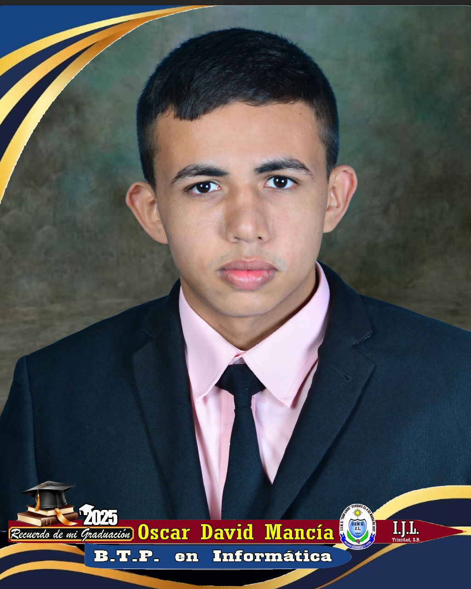

Sobre Mí
Estudiante de Ingeniería en Computación | Técnico en Informática
Soy un profesional apasionado por la tecnología y la optimización de procesos. Cuento con sólida experiencia en la gestión, análisis y digitalización de datos aplicados al sector agroindustrial, destacándome en el manejo de registros, bases de datos y herramientas geoespaciales.
Actualmente combinó mi desarrollo laboral con mi formación académica en ingeniería en computación, enfocándome en el desarrollo de software, la automatización y el uso eficiente de herramientas tecnológicas para la toma de decisiones estratégicas.
Formación Académica
- Ingeniería en Computación: Cursando actualmente en la Universidad Tecnológica de Honduras (UTH).
- Bachillerato Técnico Profesional: Especialidad en Informática.
Experiencia y Enfoque
- Digitalización y control de documentación técnica de productores.
- Manejo de bases de datos, herramientas GPS/SIG y análisis geoespacial.
- Desarrollo web y automatización de procesos administrativos.